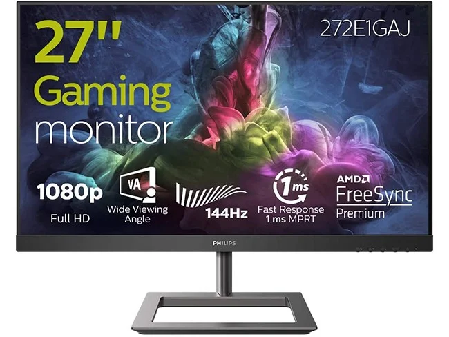
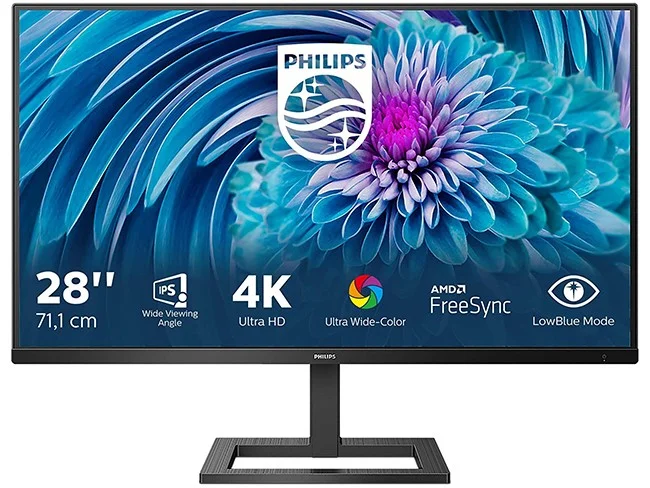
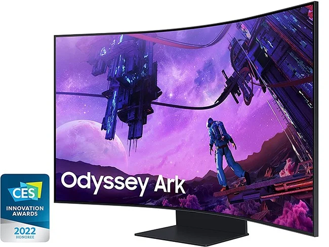
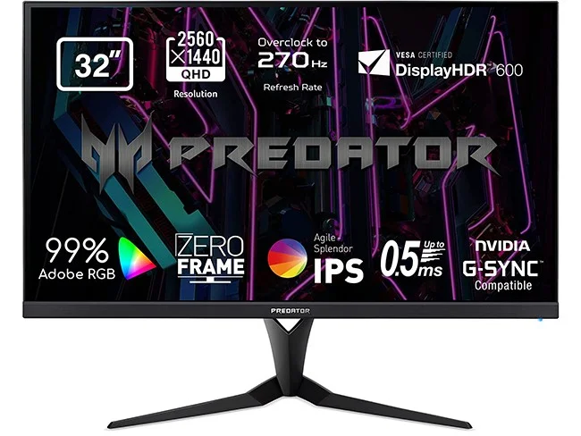

Um dispositivo de saída que apresenta ao utilizador informações, que são processados pelo CPU ou que foram inseridos pelo utilizador. Um monitor dispõe de vários pontos que devem ser considerados para sua distinção em termos de usabilidade e qualidade. Atualmente, eles dispõem de alta qualidade e podem inclusive conectar-se com a televisão ou com outras telas. Em combinação com boas placas gráficas, são bons dispositivo de entretenimento para reproduzir filmes e jogos. Aqui está apresentação de alguns monitores para jogar e para o trabalho.
| Imagem | Características |
|---|---|
|  | Tamanho:27 polegadas |
| Resolução:FullHD (1920 × 1080) 16:9 | |
| Taxa de Atualização:144Hz | |
| Tempo de Resposta:1ms | |
| Portas:DisplayPort,HDMI | |
| Preço:180€ | |
A Philips tem um dos melhores monitores para jogar em 144Hz com boa relação qualidade e preço. Moldura muito fina, com um painel VA(Vertical Alignment) brilhante, com uma resolução FullHD de 27 polegadas ,tempo de resposta baixa e com isto por um preço de 180€.
| Imagem | Características |
|---|---|
|  | Tamanho:27 polegadas |
| Resolução :4K UHD (3840 × 2160) 16:9 | |
| Taxa de Atualização:60Hz | |
| Tempo de Resposta:4ms | |
| Portas:DisplayPort,HDMI | |
| Preço:305€ | |
Outro monitor criado para Philips, perfeito para quem valoriza a precisão das cores num monitor 4K para trabalho, edição de imagem ou vídeo.Tem ajuste em altura e inclinação. Tem como portas HDMI 2.0 e um DisplayPort e uma ligação bluetooth.Tem modo de jogo com AMD FreeSync apesar que não é muito recomendado para jogos devido ao seu tempo de resto. Conseguesse destacar pela sua resolução 4K UltraClear, perfeito para as pessoas que estejam a trabalhar com gráficos 3D ou CAD(computer-aided design).
| Imagem | Características |
|---|---|
|  | Tamanho:55 polegadas |
| Resolução :4K Ultra HD (3840 x 2160) | |
| Taxa de Atualização:165Hz | |
| Tempo de Resposta:1ms | |
| Portas:DisplayPort,HDMI,VGA,USB-C | |
| Preço:305€ | |
No monitor da samsung é apresentado um ecrã curvo com iluminação LED,podendo ser usado na horizontal ou vertical. É uma autêntica Smart TV otimizada para jogos, com dock de controlo, tecnologia Quantum Matrix e quatro altifalantes (total de 60 W). Tem uma taxa de resposta de 1ms e atualização superior a 144Hz chegando até a 165Hz, tendo 55 Polegadas.
| Imagem | Características |
|---|---|
|  | Tamanho:32 polegadas |
| Resolução :Quad HD (2560 × 1440) 16:9 | |
| Taxa de Atualização:165Hz | |
| Tempo de Resposta:1ms | |
| Portas:DisplayPort,HDMI,USB | |
| Preço:305€ | |
O monitor Acer apresenta um tamanho de 32 polegadas.A construção é sólida,tem linhas angulares, ajuste de altura e inclinação. Oferece também os melhores ângulos de visão,cores e um ótimo contraste, para além da tecnologia FreeSync Premium e uma alta taxa de atualização. Este monitor é perfeito tanto para jogar como fazer trabalhos em gráficos 3D.